Établir des
relations de parenté (lycée)
Établir des
relations de parenté (lycée)
Établir des
relations de parenté (lycée)
On représente les relations de parenté par un arbre
phylogénétique établi par la méthode
cladistique : un cladogramme.
Pour construire un cladogramme, il faut avoir un tableau de caractères où les états dérivés sont distingués des états primitifs. Il faut donc avoir préalablement polarisé les caractères. Il vaut mieux aussi avoir rangé le tableau. Cela permet d'activer les taxons dans un ordre logique : de préférence en commençant par les taxons du groupe ayant le moins d'états dérivés (le taxon extragroupe sera laissé de côté).
Tracé d'un cladogramme pas à pas 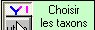
l'icône de choix des taxons doit être activée.
| Au départ aucun taxon n'est actif. Il faut en choisir deux qui possèdent au moins un état dérivé commun et les activer en cliquant sur leurs noms dans le tableau.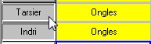 | ||||||
|
Activer un caractère dont un état
dérivé est partagé par les deux taxons.
Relier alors ces deux taxons en raison de leur état
dérivé exclusif (parmi les taxons
sélectionnés) partagé.
|
||||||
|
Lorsque l'on choisit un caractère, un code couleur apparaît : C'est le code qui a été choisi à l'étape polariser. Si cette étape a été omise un code par défaut est utilisé :
|
||||||
| Choisir un autre taxon ayant un caractère dérivé partagé avec un des deux autres. | ||||||
| 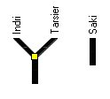 | ||||||
|
S'il y a un caractère dérivé partagé avec un seul des deux premiers taxons, on branche le nouveau taxon sur la branche de l'ancien. Dans le cas contraire, on branche le nouveau taxon sur le noeud. |
||||||
|
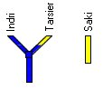On observe ici que le Saki et le Tarsier ont un caractère dérivé commun (absence de rhinarium) qui n'est pas partagé avec l'Indri. La branche du Saki se rattache donc à celle du Tarsier. Il suffit de cliquer sur la branche du Saki. De la déplacer avec la souris, le bouton gauche restant enfoncé et de la relâcher sur la branche du Tarsier |
||||||
| 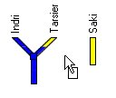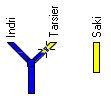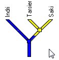 | ||||||
|
Déplacement des branches de l'arbre :
|
||||||
| On continue ains en activant les taxons un par un (en remontant dans la liste si le tableau a été bien organisé). | ||||||
|
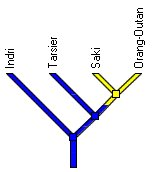 caractère sélectionné : orbites fermées |
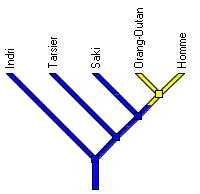 caractère sélectionné : narines |
|||||
| Les autres taxons partagent tous les mêmes états de caractères (pour ceux référencés dans la collection). Ils se rassemblent donc au même niveau. | ||||||
| 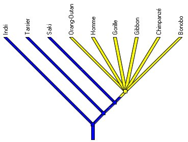 |
||||||
Comparaison de différents arbres
Si on veut conserver les étapes de la construction de l'arbre ou si on hésite entre plusieurs possibilités, on peut conserver l'état actuel dans une fenêtre qui permettra de comparer avec une modification ultérieure. Pour copier un état de l'arbre, cliquer sur le bouton Choix et choisir le menu Copier l'état actuel.
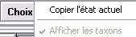
Lorsque l'on active un caractère du tableau, la coloration est aussi mise à jour dans toutes les fenêtres ouvertes.
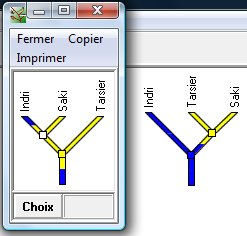
Ici, la version de gauche nécessite deux changements (dans la branche racine et dans la branche de l'Indri) elle est donc moins probable que la version de droite qui ne nécessite qu'un changement.
Remarquer aussi la couleur blanche du noeud qui relie Indri et Saki. Cette couleur indique qu'il n'y a pas de caractère dérivé partagé exclusif qui justifie ce noeud. Cela ne veut pas forcement dire qu'il y a une erreur (ce peut être dû à une convergence ou à une réversion). C'est un signal qui indique qu'il y a un problème à résoudre.
Lorsqu'une copie a été faite, un menu arbres apparaît qui permet de gérer les fenêtres d'arbre qui ont été crées.
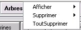
les icônes en relation avec le tableau
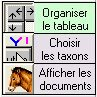
le menu choix 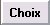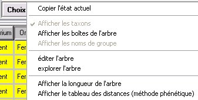
Copier l'état actuel (voir ci-dessus)
Afficher les boîtes de l'arbre : c'est la mise en évidence des groupes monophylétiques avec leur représentation sous forme de boîtes sur l'arbre. Ces groupes peuvent être nommés.
éditer/explorer l'arbre
Afficher la longueur de l'arbre : cette indication de longueur permet de faire des choix entre plusieurs versions d'arbre en utilisant le principe de parcimonie.
Afficher le tableau des distances : ce tableau donne le nombre de différences entre les taxons en tenant compte des états primitifs et des états dérivés. Il n'est proposé dans cette partie que pour permettre de comparer la méthode phénétique (basée sur les ressemblances globales) et la méthode cladistique.
Les icônes de manipulation de l'arbre
| 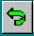 | Annule les opérations réalisées (une par une) |
| 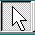 | Doit être enfoncée pour permettre le travail de déplacement des branches et d'affichage sur l'arbre du code couleur des états d'un caractère. |
| Permutation des branches autour d'un noeud : cliquer sur cette icône, puis se placer au niveau d'un noeud et cliquer à nouveau. | |
| 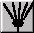 | Rejoint toutes les branches en annulant les regroupements antérieurs (point de départ de la construction de l'arbre dans l'ancienne version). |
{kind=link}
{kind=link}